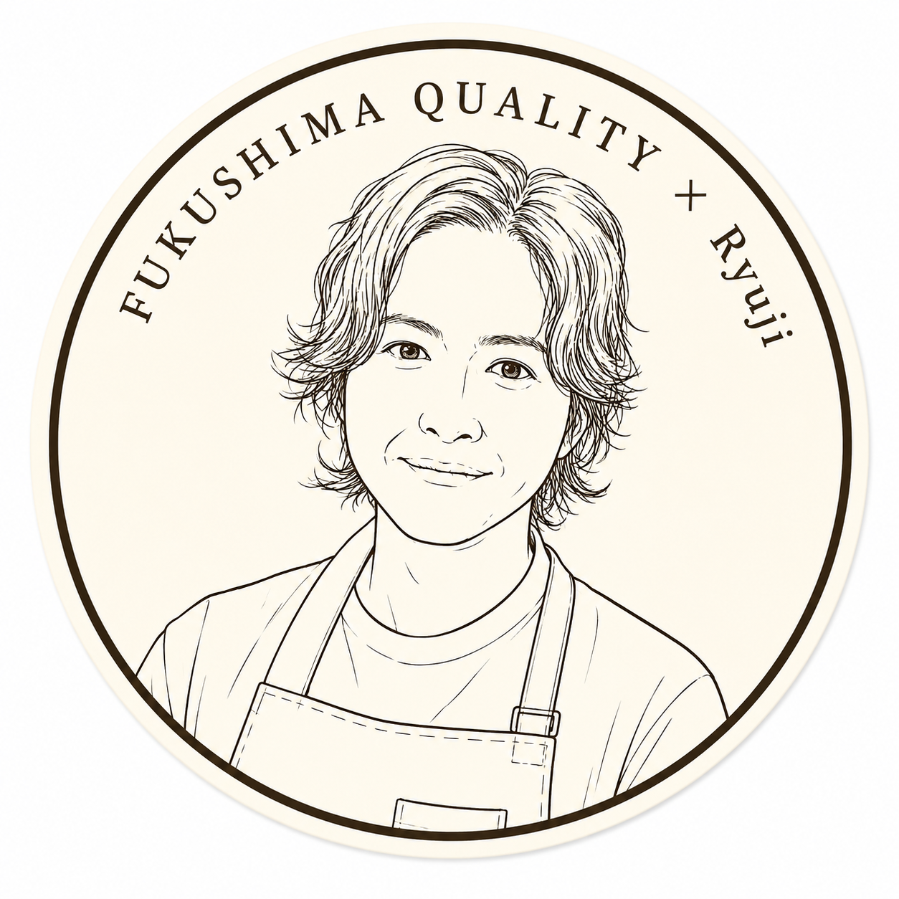
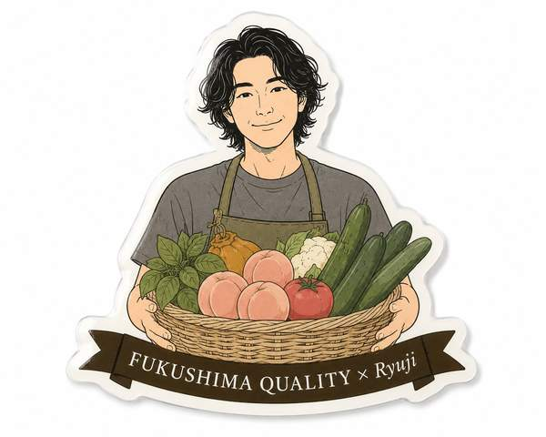
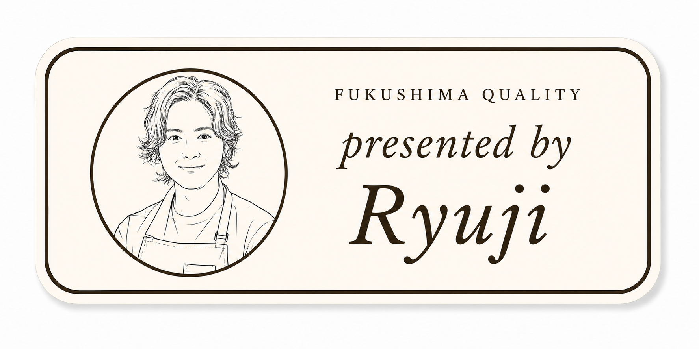

01
ダイカットステッカー
Die-cut Sticker ／ Ryuji
2026.08 Launch
Concept
車・MacBook・ボトル等にペタッと貼る1枚もののダイカットステッカー。リュウジ主役で見せ方を変えた3パターンを展開し、コレクション性とシリーズ感を両立。「品質の証言者」としてのリュウジ像を多面的に表現することで、貼る場所や気分に合わせて選べる楽しさを提供。

A: 円形ポートレート— Primary
リュウジの顔を円形に。シンプル直球。アクキー基本案と形を揃えてシリーズ感も担保。

B: 食材バスケット
福島の食材を抱えたリュウジ。「品質を選び抜く目利き」というコンセプトを最も強く体現。

C: バンパースタイル
横長で「presented by Ryuji」のタイポグラフィ主役。エディトリアルで上質。